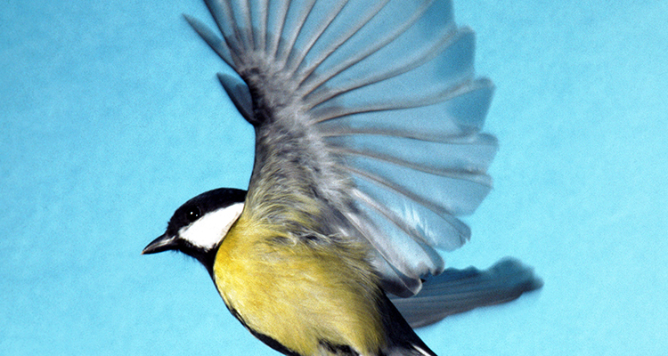

This page has multiple view settings. For best viewing results, select the to swap to full screen. To reset your view, select .
Application Overview
Application page description to provide context for the user. On this page, you can aenean lacinia bibendum nulla sed consectetur. Integer posuere erat a ante venenatis dapibus posuere velit aliquet.
Panel title

Search for a species by common, scientific name or search by category.